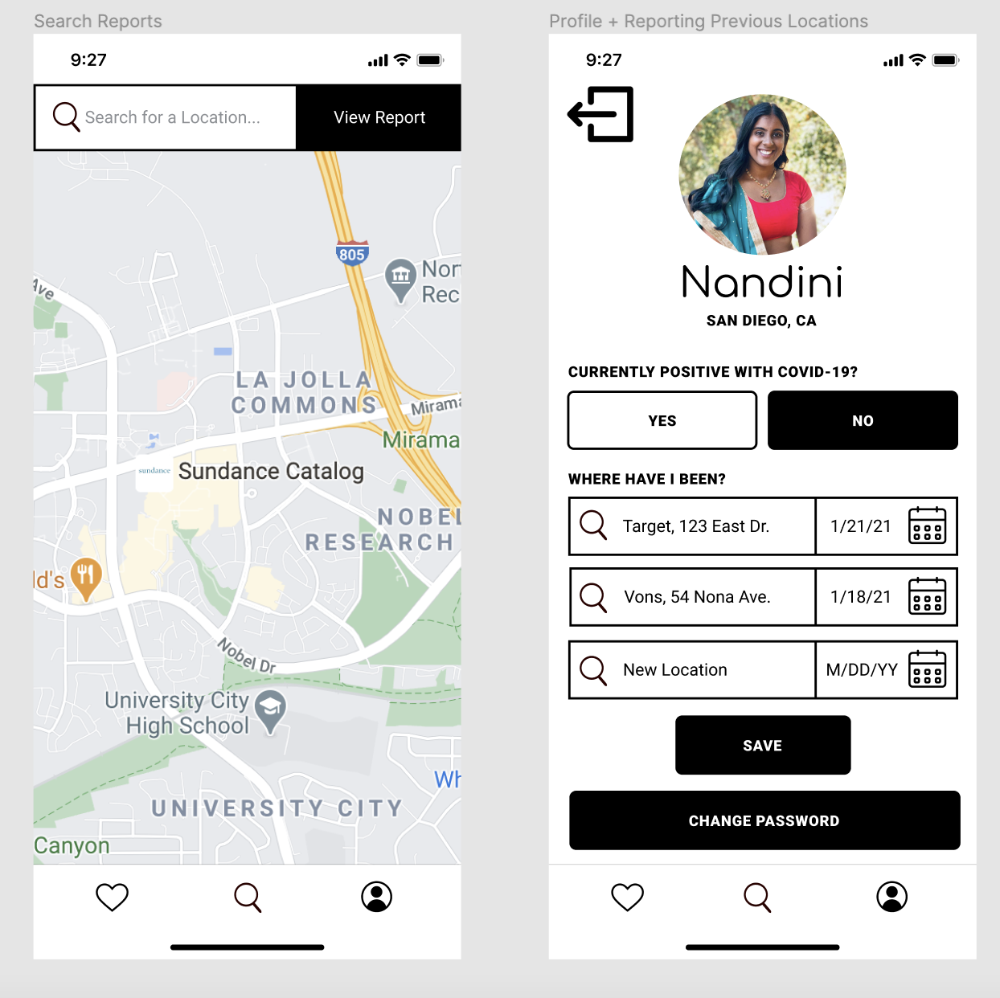
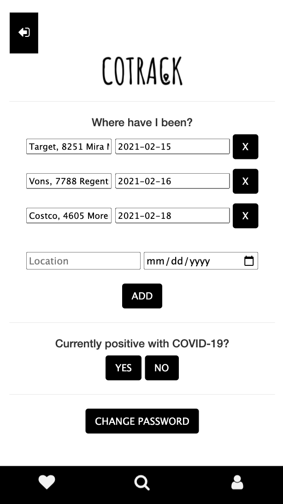
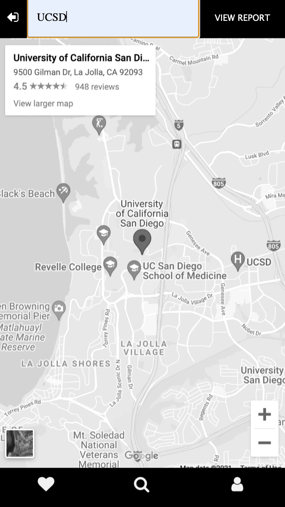
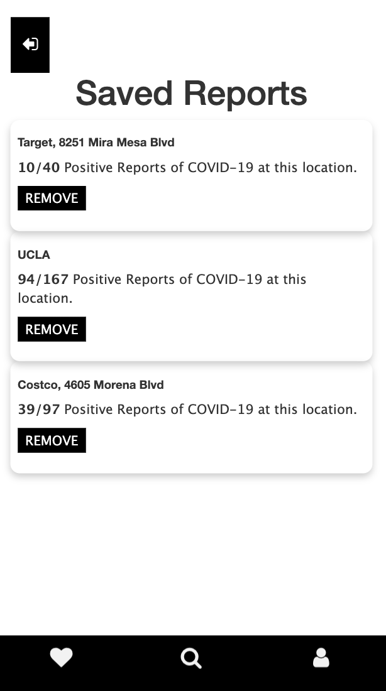

"Why is this important to me?"
Suppose you want to know where others around you have been. For example, you are at a grocery store, and want to know who else was there that day and if they may become sick or have gotten sick recently. Asking around may seem like the most obvious choice, but you may have travelled to a store that hundreds of others have visited and have no way of knowing your risk of exposure to COVID-19 from travelling to that place on that day. Travelers, travelling to the grocery store or across the country, need a way to access information about the spread of COVID-19 in a manner that is actionable and shows information that is most pertinent to their own exposure and community."How was this application built?"
This application was built using the following languages:- HTML
- Javascript
- JQuery
 The above wireframes that reflect our profile and main search pages.
After implementing this design and recieveing feedback from our peers, we realized we had a major issue that would substantially affect the way users intereact with our application. We realized that our application did not allow for flexibility.
Our users needed a way to update their COVID results and save results in the application for easy use and ability to accurately update the data that would be used towards the application. We found that the best way to do that would be to add an account feature in which each user would have an account that is associated their data that can be later updated or deleted.
After a period of further developmennt we developed an application that has the following:
- A search feature with integrated Google Map for searching and visualizing reported locations.
- A reporting feature in which one can report a postiive/negative COVID-19 result and the locations that person has visited.
- A saving feature in which users can save updated reports of specific locations to refer to at a later time.
- Report locations they have previously been.
- Search reports for specific locations; this will allow them to identify whether they will or have already put themselves at risk of infection.
- Inform others that they may have infected them at a specific location.
  
"What else can this project do?"
This application currently has the following above features. However, if we were to further develop this application, we could expand the features to include a variety of interactions that would allow the project to be used on a larger, even global scale. We would hope to allow the application to:- Incorporate the day and time in which a user visited a location into the case reports.
- Allow user to be able to sync whereabouts with calendars to reduce redundancy for user when entering information.
- Further develop map interaction to select a place when searching for a location.
"What did you take away from this project?"
On a technical front, I learned from the challenges I encountered. Not only programming barriers from using unfamilar languages, the course provided a double-edged sword of design opinions and feedback from a variety of peers. This was beneficial in allowing my team to recieve a multitiude of feedback that was instrumental in creating a creating a flexible interface that accounts for the common issues or “edge” cases users might encounter, but was difficult to navigate as feedback sometimes conflicted and did not align with our project's goals. Overcoming this challenge allowed us to see how important user feedback is in the design of an application as we learned how to incorporate specific feedback in our implementation.Through working on our team, we have learned that a variety of perspectives offer immense feedback and work that is extremely helpful in the development of a project from the prototype to the application itself. Sharing ideas and working with one another allowed us to gain clarity on confusing design aspects and join our technical skills to further develop our project into a working application. If we were to do it all again, we would take more time to further develop the design aspects of our application to ensure that not only the functionality is present, but the design aspects are fully fleshed for the most clear and intuitive use of the application.